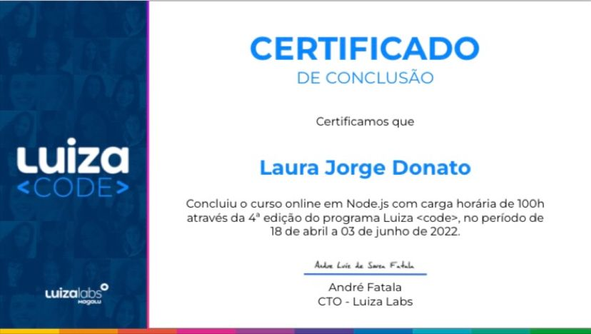

03 de Junho de 2022
Luiza Code - 4ª Edição

Curso online Node.js Luiza Code - Luizalabs
Quando me inscrevi no Luiza Code não imaginava como este projeto poderia mudar a minha vida. No começo, um mix de emoções: novos desafios, medo, mas acima de todos, coragem.
E recebi a confirmação de que, dentre 6300 candidatas, fui uma das selecionadas para o projeto.
Hoje compartilho com vocês a conclusão deste bootcamp incrível, que é resultado de muita dedicação, esforço e determinação.
Obrigada a todos os envolvidos por esta oportunidade única! Minha gratidão a todos os professores, parças, madrinhas e mentores, por compartilharem seus conhecimentos e ensinamentos com a gente. Vocês são maravilhosos e sem vocês nada disso teria sentido!